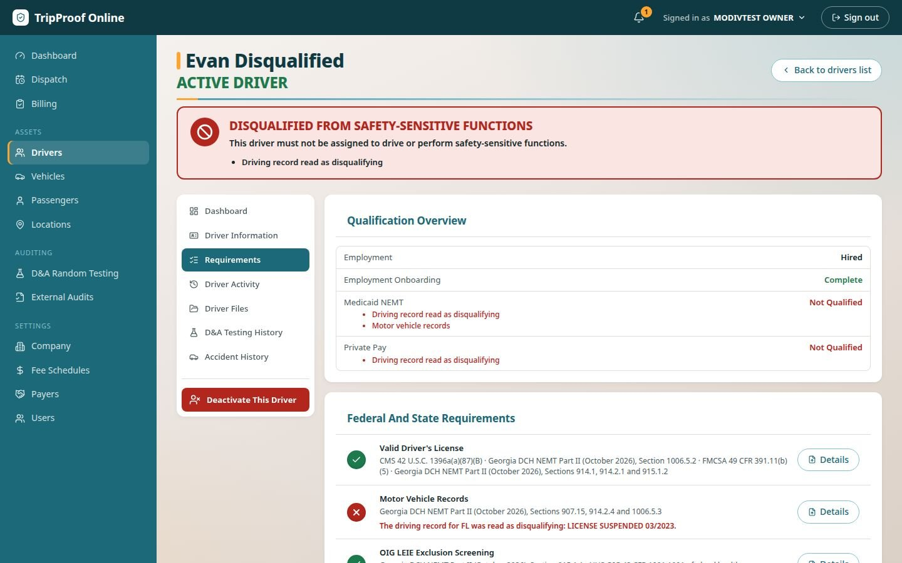
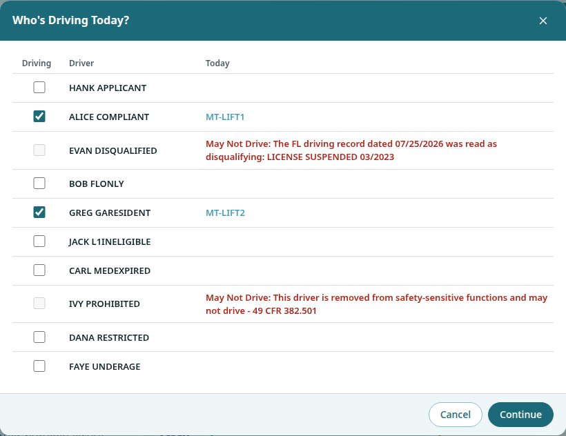

NEMT Management Software for Dispatch, Compliance & Billing
TripProof Online brings non-emergency medical transportation operations together in one system. From scheduling trips and managing driver qualifications to vehicle compliance, proof of service, and billing, TripProof is designed to help transportation providers operate efficiently while maintaining defensible records.
IN BETA.
RECRUITING BETA TESTERS NATIONWIDE.
More Than Dispatch Software
Unlike systems focused primarily on scheduling and routing, TripProof is being built around a compliance-first approach.
Before a trip is assigned, the system is designed to evaluate whether the driver and vehicle meet applicable requirements. From there, trip documentation and billing records are connected to the same operational workflow.
Currently recruiting beta testers nationwide.
NEMT Dispatch & Trip Scheduling
Manage scheduled trips, driver assignments, vehicle availability, and transportation requests from one centralized system.
TripProof Online is being designed to help NEMT providers coordinate daily transportation operations, manage return trips and will-call requests, and maintain accurate trip records throughout the transportation process.
Facility Scheduling Portal
Your Facilities Request the Trips. Your Dispatch Team Makes the Decisions.
Give nursing homes, assisted living facilities, dialysis centers, rehabilitation centers, and other healthcare facilities a convenient way to request transportation directly through TripProof Online.
Authorized facility users can securely log into their own portal, access only their facility's permitted information, and submit transportation requests with pickup and drop-off details.
Every request goes through dispatch.
Just like broker-submitted trips, facility transportation requests enter the provider's dispatch workflow and must be explicitly accepted or rejected.
A submitted request is not automatically a confirmed trip.
Designed for NEMT Providers and Their Facility Partners
- Give facilities their own secure transportation request portal.
- Reduce phone calls, emails, and manual trip entry.
- Keep each facility's information separated from other facilities.
- Review, accept, or reject requests from dispatch.
- Manage facility requests alongside broker and other transportation trips.
Facilities submit. Dispatch approves. TripProof keeps everything connected.
Driver Qualification & Compliance Management
Driver compliance is at the center of TripProof Online.
The platform is designed to track driver qualifications, license expirations, medical certifications where applicable, background screening records, required training, and other documentation.
TripProof's compliance-first assignment process is intended to help prevent drivers from being assigned to trips when they do not meet applicable federal, state, or payer-specific requirements.
Vehicle Compliance & Inspection Tracking
TripProof connects vehicle records and inspection information with the dispatch process.
Transportation providers will be able to manage vehicle documentation, inspection records, maintenance-related restrictions, and other applicable vehicle compliance requirements.
The objective is to help ensure that vehicles meet the relevant requirements before being assigned to passenger transportation.
NEMT Proof of Service & Billing
TripProof is being developed to connect transportation activities with the documentation needed to support billing.
The system is designed to capture trip information such as pickup and drop-off activity, timestamps, location records, and passenger signatures when required.
By connecting dispatch, trip documentation, and billing, TripProof aims to reduce disconnected workflows and make transportation records easier to review, reconcile, and audit.
TripProof Online is currently preparing for launch and recruiting beta testers nationwide.
Made for the people who run the trips.
TripProof is built for NEMT providers doing Medicaid broker trips, private-pay trips or both, from a few vehicles to a full fleet, and is run by dispatchers rather than compliance specialists.
One system instead of three
- Dispatch, driver files and billing in one place, sharing one record of each trip.
- Know which drivers and vehicles can work today, and why any cannot.
- Ready for a broker audit without assembling the file afterwards.
A board that will not let a mistake through
- Book trips, auto assign the day and handle will-calls and on-call cover.
- A driver who may not drive is never offered for the trip.
- Problems from the road arrive on the board as they happen.
The day's trips on the phone
- Each trip in order, with navigation handed to the phone's own maps.
- On the way, arrived, aboard and dropped off, one tap each.
- Passenger signature, waiting time and vehicle checks on the same screen.
Four jobs. One record.
Book, assign and run the day
- Trip booking with one or more legs, and will-calls.
- Auto Assign for the day's trips across the drivers working that day.
- Wheelchair trips matched to lift vehicles and trained drivers.
- On-call cover for pickups outside office hours.
- A driver out sick taken off their trips in one action.
Every file, checked the day of the trip
- Licenses, driving records, screenings, training and vehicle documents, with expiry dates tracked.
- OIG and SAM federal exclusion lists screened every day.
- A disqualifying driving record stops that driver's trips until it is cleared.
- An online driver application with electronic signatures.
The trip recorded as it happens
- Each step of the trip with its time and GPS position.
- The route driven and the miles, shown on a map in the trip record.
- The passenger's signature at drop-off, or the driver's reason why not.
- Pre-trip vehicle inspections filed from the phone.
From a driven trip to payment
- Trips priced from your own fee schedules, including no-shows and late cancels.
- Each broker's rules applied before a trip is billed: mileage caps, wait limits, billing deadlines, trip numbers and signatures.
- Broker batches and private-pay invoices with reminders.
- Payments, short pays, denials and write-downs tracked until settled.
Checked before the trip, not after the audit.
In traditional NEMT dispatch software the trip is scheduled in one place and the driver's qualifications live somewhere else, usually a spreadsheet or a filing cabinet. Nobody connects the two until an auditor asks. TripProof makes the check part of the assignment.
Refused, not warned
- An assignment that breaks a rule is refused with the reason named, not shown as a warning someone can click past.
Rechecked on the spot
- When a license lapses or a driving record comes back disqualifying, every trip that driver holds in the next month is checked again and flagged for dispatch.
Nothing to assemble later
- Each trip keeps the checks it passed, its timeline, its route and its signature, added to and never quietly changed.
Compliance Before Dispatch
Don't Just Track Compliance. Enforce It.
Knowing that a driver is disqualified isn't enough. Transportation management software should help prevent that driver from being assigned to a trip.
TripProof Online connects driver qualification decisions directly to dispatch.
Identify the Problem
TripProof evaluates driver qualifications against applicable federal, state, and payer-specific requirements configured in the platform.
When a driver fails a required qualification, TripProof identifies the issue and explains the reason.

Automatically Restrict Assignments
TripProof does more than display compliance warnings.
When a driver is disqualified, the platform prevents that driver from being scheduled or assigned through:
- Daily driver and on-call scheduling
- Manual trip assignments
- Automatic trip assignments
These restrictions are enforced by the backend, not simply by disabling a button in the user interface.
Know Why a Driver Cannot Be Assigned
Dispatchers can see the disqualifying condition, while the driver's qualification records provide additional details and supporting documentation.
This helps transportation providers understand why an assignment was rejected and what needs to be addressed.

Compliance That Works With Dispatch
By connecting driver qualification records with scheduling and assignment decisions, TripProof helps transportation providers prevent prohibited assignments before they happen.
Every Trip. Proven.
Frequently Asked Questions About TripProof Online
What is TripProof Online?
TripProof Online is cloud-based non-emergency medical transportation (NEMT) management software that combines trip scheduling, dispatch, driver and vehicle compliance, GPS-supported proof of service, and billing in one system. It is developed by Arrowleaf Technologies, LLC.
How is TripProof different from traditional NEMT dispatch software?
TripProof takes a compliance-first approach. Rather than treating driver qualifications and vehicle requirements as separate administrative records, TripProof connects eligibility checks directly to trip assignments. The goal is to prevent assignments that violate configured requirements and maintain supporting documentation for each trip.
Does TripProof check driver and vehicle compliance before dispatch?
Yes. TripProof's beta platform includes qualification and expiration tracking, exclusion screening, and driver and vehicle assignment restrictions. Compliance coverage depends on the applicable requirements and configured rule sets. Additional state-specific NEMT requirements are being developed.
Does TripProof integrate with NEMT brokers such as Modivcare and MTM?
TripProof currently supports entering trips directly and importing trips from files. Direct connections to broker trip feeds are under development. Availability of individual broker integrations will depend on the broker and supported integration methods.
Does TripProof have a mobile app for drivers?
TripProof currently offers a mobile-friendly driver application accessed through a phone's web browser. Dedicated Android and iPhone applications are in development.
Is TripProof Online available for purchase?
TripProof Online is currently in beta testing and is not yet generally available for commercial purchase. Selected NEMT transportation providers can apply to participate in the beta program and help shape the platform's development.
Visit https://tripproofonline.com to learn more.
Run your trips on TripProof.
Beta testers get the full system and a direct line to the people building it.